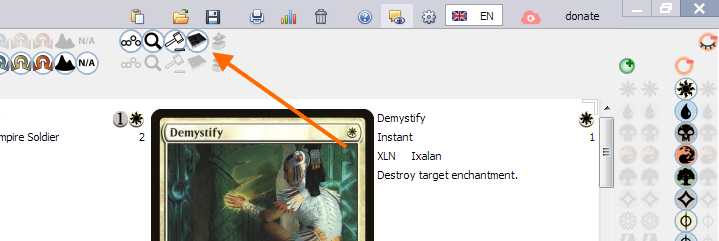
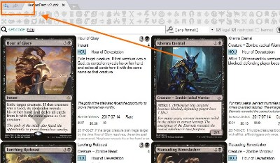
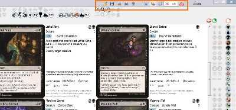

2. Deck and Collection Editor
Deck editing
| result | action |
|---|---|
| add / remove 1 card |
Drag-n-drop the card to deck area (bottom area of
the window) orclick the card using
Right / Middle mouse
buttons |
drag from main deck and drop
to sideboard |
|
drag-n-drop cards between
different open tabs |
|
create a new tab while draggig
|
|
| add / remove 4 cards |
Ctrl + drag-n-drop or
Ctrl + Right / Middle mouse click |
| switch between main deck and sideboard |
Use |
{kind=link}
{kind=link}
Collection editing
| result | action |
|---|---|
| add / remove 1 card from collection |
Alt + Right / Middle mouse click |
| add / remove 4 cards from collection |
Ctrl + Alt + Right / Middle mouse click |
| observe cards in collection |
Filter search result by cards from Collection. You may may want keep a separate tab just for this - displaying collection cards.  |
{kind=link}
Sample hand, Draw and Mulligan simulation
To see what your hand would be with current deck use sample hand tab. You will see the buttons
-
new handshuffles the library and deals you 7 random cards -
mulliganshuffles the library and deals you N-1 random cards where N is current hand size -
drawadds 1 random card to your current hand
Deck editing commands such as adding / removing / reordering cards still work in sample hand tab.
Combining card removal with middle mouse click with draw button you can simulate your hand content
within the match.
{kind=link}
Window header buttons
|  |  |
{kind=link}
{kind=link}
These are described in a separate page.